Figura 10
MÓDULO CONTRIBUIÇÃO DE MELHORIA
O objetivo deste módulo é controlar e gerar os valores financeiros das obras de melhorias realizada no município, permite montar o edital da contribuição, calcular os valores a serem pagos e notificar os clientes.
Nesse menu é cadastrado uma Contribuição de Melhoria sempre parte de uma lista de matriculas que é ligada sempre de um logradouro (rua). Esse lista é os contribuintes do logradouro selecionado.
Descrição dos campos e modelo do cadastro conforme Figura 1.
Lista de Projeto: Gera o código da lista automático.
Logradouro: Permite selecionar o logradouro ou clicar no link para pesquisar.
Responsável: Preencher o responsável que seria o CGM de quem vai repassar com a lista de casa em casa perguntado quem quer realmente que a melhoria seja executada (normalmente utilizado na fase de estudo da viabilidade de execução da obra).
Profundidade: Permite preencher a profundidade (metade da largura da rua), pois como normalmente existem matriculas dos dois lados da rua, é cobrado metade de cada lado.
Descrição do Trecho: Preencher o trecho da rua que seria de que parte da rua até a outra parte a obra será executada, como por exemplo: entre as ruas X e Y;
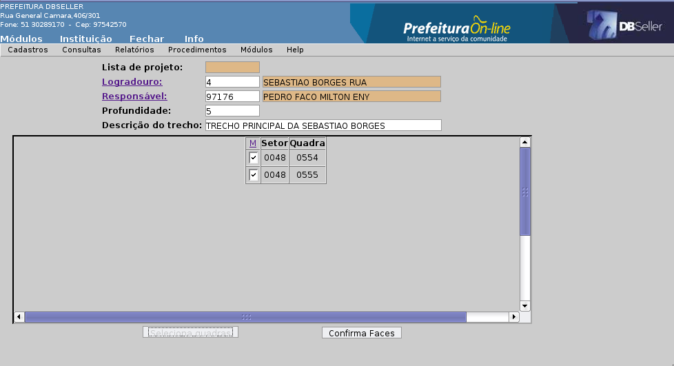
Figura
01
Depois clicarmos em seleciona quadras, e marcamos as quadras e clicarmos em Confirmar Faces o sistema traz as matriculas baseado em todas as testadas registradas no cadastro imobiliário para o logradouro escolhido, independente de ser testada principal ou não, para o usuário escolher / confirmar, trazendo as informações do cadastro e permitindo alteração;
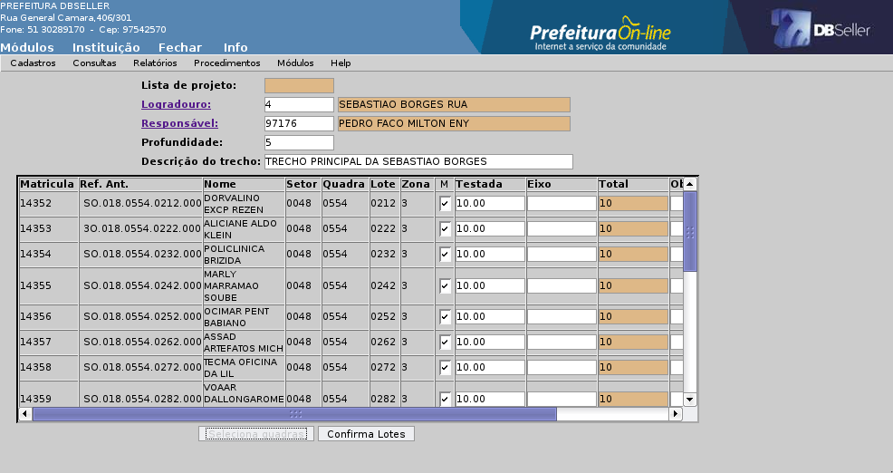
Figura
02
A informação do eixo é para as esquinas em que podemos aumentar ou diminuir o valor a ser considerado na cobrança, pois as vezes, um lote já tem um pouco de calçamento proveniente de uma obra na outra rua, podendo no caso dos lotes de esquina haver descontos, ou pode ocorrer o contrário de ter acréscimo. Algumas prefeituras utilizam o eixo para poder cobrar dos lotes de esquina a parte asfaltada, e outras querem ratear isso entre todos os lotes beneficiados pela obra, e justamente essa é a finalidade da opção do campo [ testada proporcional ] na inclusão de contribuição , ou seja, ratear a parte da obra das esquinas entre todos os lotes;
Não podemos esquecer de que, no caso de lotes com mais de uma matrícula, o sistema já faz o rateio utilizando o mesmo cálculo de fracionamento utilizado no cálculo do IPTU. Isso faz com que exista casos em que a testada esteja preenchida com um valor baixo, justamente pelo fato do sistema já ter aplicado o fracionamento.
O usuário pode modificar essa informação neste ponto do sistema. Após os ajustes, clicarmos em confirmar e o sistema vai gerar um código para a lista.
Ao marcar quais as matriculas vam pagar para a prefeitura a obra, pois em algumas prefeituras a obra é feita por empreiteiros (empresas licitadas), porem alguns contribuintes pagam direto para as empresas e outros a prefeitura. Basta ajustar o campo Pagamento Prefeitura marcando os que vão pagar para a prefeitura, e justamente apenas esses serão considerados daqui para a frente.
Isso significa que somente será gerado cálculo para os que tiverem marcados para Pagamento Prefeitura. Isso justamente porque o normal é alguém gerar a lista, e depois imprimir (opção Relatórios > Lista de Projetos) e ir de casa em casa verificar quem quer a obra e se vai pagar para a prefeitura ou não, e o contribuinte assina a lista e depois essa informação deve ser registrada no sistema.
Depois de marcar, basta clicar no Botão Atualiza Lotes se quiser marcar todos, clicando na letra M do título da coluna.
No Botão Lista Prefeitura emite uma lista de conferencia para prefeitura como na Figura 03.
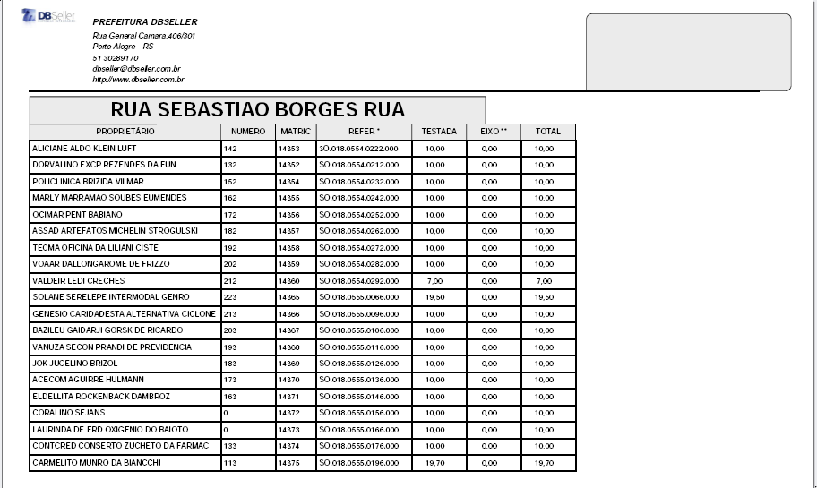
Figura
03
No Botão Lista Comunitária emite uma lista de conferencia como na Figura 04.
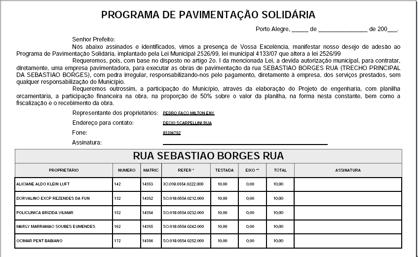
Figura
04
No botão Outras Matriculas permite incluir um matricula na lista que não estava cadastrada corretamente quando foi gerado a lista conforme Figura 05.
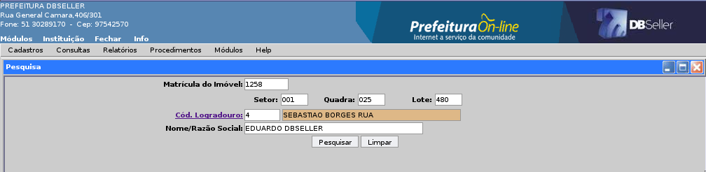
Figura
05
Não permite excluir uma lista que foi vinculada a uma Edital.
Permite importar os dados de outra lista do sistema para criar uma nova Lista conforma Figura 06.
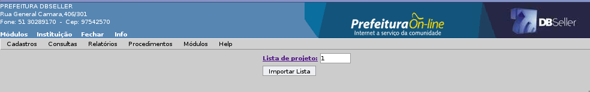
Figura
06
Nesse menu é cadastrado o Edital que pode ser composto por várias listas, e nesse momento é que colocamos as informações como percentual de resgate (parte que o contribuinte vai pagar, pois normalmente a prefeitura paga uma parte). Ao preencher os campos descritos abaixo devemos selecionar as Lista para o Edital. Depois de clicar em incluir, o sistema vai mostrar o código interno do edital no sistema.
Descrição dos campos e modelo do cadastro conforme Figura 7.
Código Edital: Gera o código seqüencial automático do Edital.
Número do Edital: Permite cadastrar uma numeração para o Edital como 001/2008.
Parcela de Participação (%): Preencher o percentual de participação da prefeitura em percentual (parte que a prefeitura vai pagar a outra fica para o contribuinte).
Receita: Preencher a receita que será utilizada para o cálculo.
Notificação Prévia: Preencher com o Tipo de documento 1701 para a notificação prévia.
Total de Parcelas: Preencher a quantidade padrão de parcelas do edital.
Primeiro Vencimento: Preencher a data de vencimento da primeira parcela.
Desconto Única: Preencher o percentual de desconto para pagamento a vista.
Descrição do Edital: Permite o usuário preencher uma descrição do Edital.
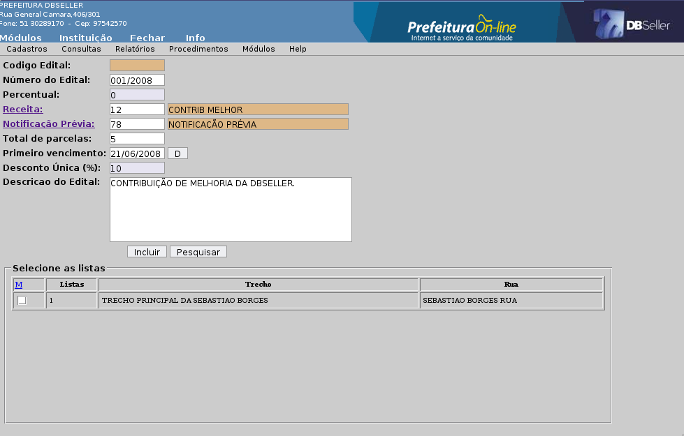
Figura
07
Nesse menu é cadastrado os os serviços que serão executados na obra, como por exemplo: asfalto, esgoto.
Descrição dos campos e modelo do cadastro conforme Figura 08.
Tipo de Serviço: Gera o código do tipo de serviço automático.
Descrição: Preencher o nome do Tipo de Serviço.
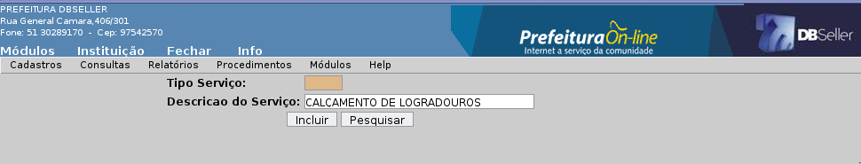
Figura
08
Nesse menu é cadastrado a Contribuição de Melhoria, acessando, onde na realidade transformamos uma lista em uma contribuição.
Descrição dos campos e modelo do cadastro conforme Figura 09.
Código Edital: Preencher o código do edital, depois o próprio sistema traz as listas do edital escolhido que ainda não foram transformadas em contribuições.
Lista: Busca as listas referente ao código do edital selecionado.
Logradouro: Seleciona o logradouro referente ao edital selecionado.
Profundidade: Seleciona a profundidade referente ao edital selecionado.
Valorização (%): Preencher o valor em percentual que será utilizado para o cálculo, ou seja, em quanto aquela obra vai valorizar o imóvel, e isso depende de cada município. Essa informação é importante pelo fato de que, nunca pode ser cobrado do contribuinte um valor maior que a valorização. Essa valorização é calculada em cima do valor venal do imóvel, que é buscado do cadastro imobiliário.
Tipo de Serviço: Preencher o código do serviço ou clicar no link para pesquisar.
Forma de Cálculo: Selecionar a forma que vai ser utilizada como base para o cálculo.
Valor da Obra: Preencher o valor total da obra que será calculada a Contribuição de Melhoria.
Quantidade (m): Preencher a quantidade em metros do tamanho da obra.
Depois devemos clicar no botão Lançar que basicamente essa rotina insere as informações básicas da contribuição, e lança as matriculas / lotes.
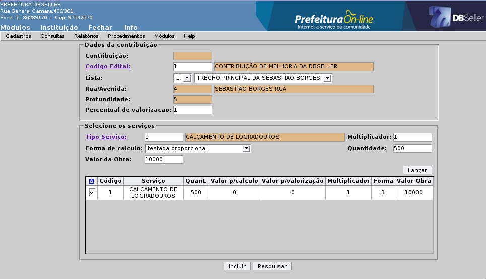
Figura
09
É feita a consulta financeira dos débitos dos contribuintes , a descrição dessa consulta está no Módulo Arrecadação, conforme Figura 10.
Figura
10
Na consulta da Contribuição de Melhoria permite saber os dados da contribuição por Matricula envolvida conforme a Figura 11 e 12 abaixo.
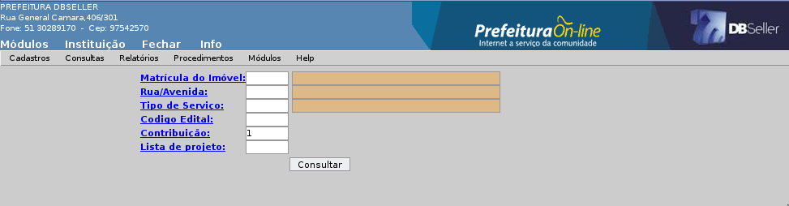
Figura
11
Tela da consulta com a lista de matricula referente a contribuição selecionada.
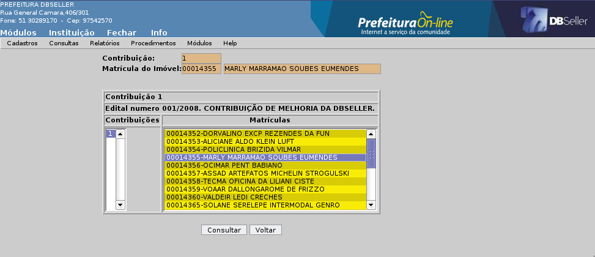
Figura
12
Tela com os dados individual da Matricula selecionada conforme Figura 13.
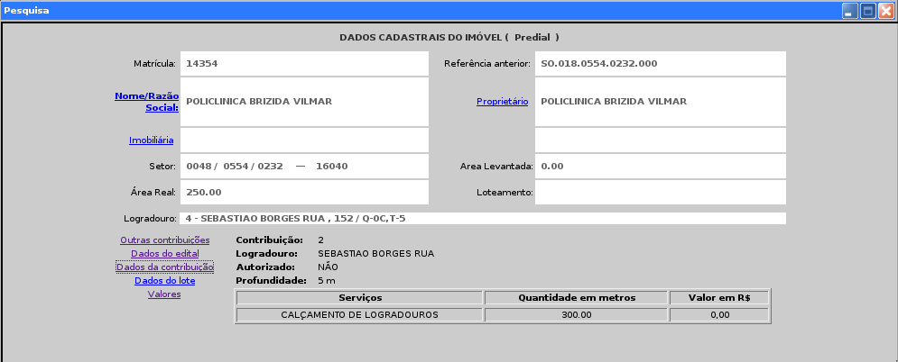
Figura
13
Nesse relatório emite uma lista das matriculas contida no projeto. Descrição dos campos e modelo do cadastro conforme Figura 14.
Lista: Preencher o código da lista ou clicar no link para pesquisar.
Relatório: Permite selecionar o modelo que se quer emitir.
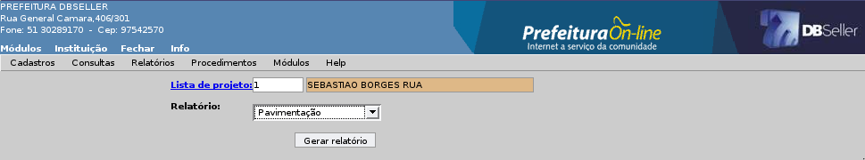
Figura
14
Na Figura 15 mostra um modelo de relatório de Lista de Projeto no DBPortal.
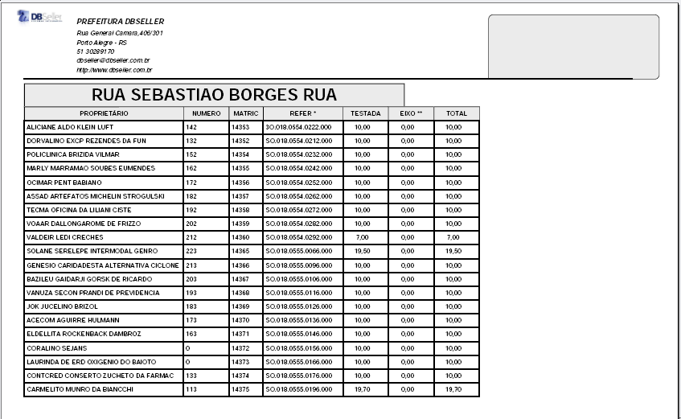
Figura
15
Nesse menu emite um relatório cadastral da Lista de Projetos do sistema e se possui algum edital vinculado a ela. Descrição dos campos e modelo do cadastro conforme Figura 16.
Data da Lista: Preencher a data inicial e final da lista.
Ordenar: Permite ordenar por (Lista, Data e Logradouro).
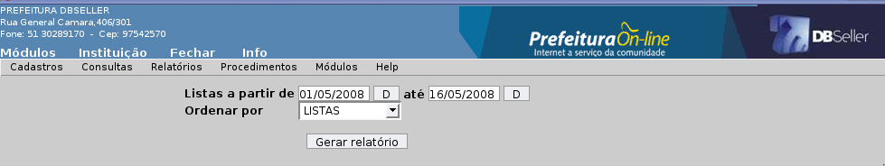
Figura
16
Na Figura 17 mostra um modelo de relatório de cadastral de Lista emitido no DBPortal.
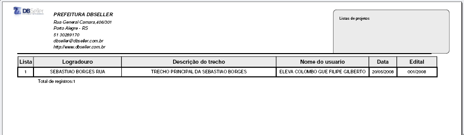
Figura
17
Nesse menu emite as notificações das Contribuições de Melhoria que foram notificadas pelo sistema no menu Procedimento > Gera Notificação. Permite emitir as notificação apenas para as contribuições calculadas e notificadas. Descrição dos campos e modelo do cadastro conforme Figura 18.
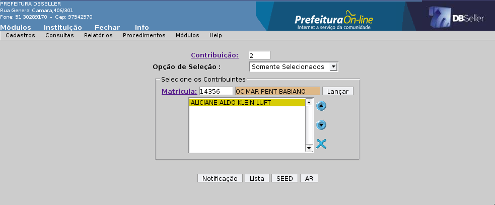
Figura
18
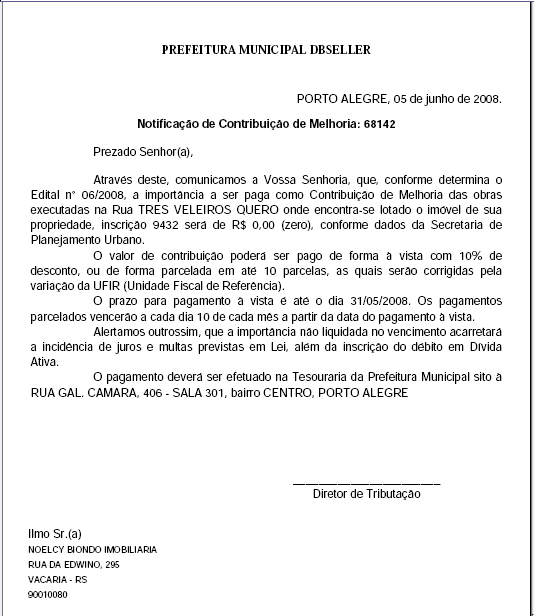
Na
Figura 19 mostra um modelo de relatório de Notificação
emitido no botão Notificação.
Figura 19
Na Figura 20 mostra um modelo de relatório de Notificação emitido no botão Lista.
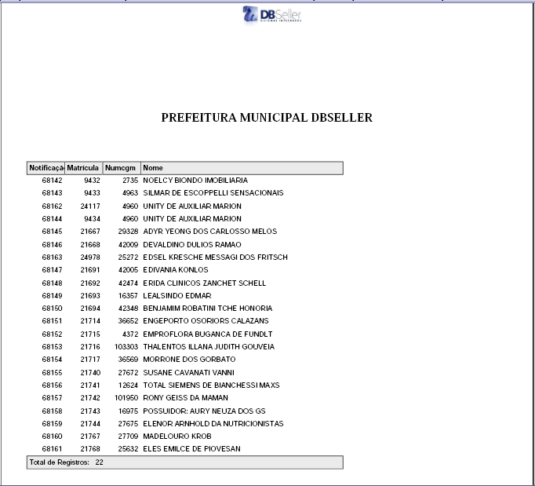
Figura
20
Na Figura 21 mostra um modelo de relatório de Notificação emitido no botão SEED.
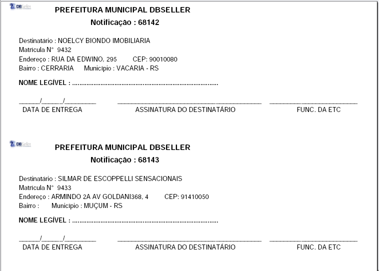
Figura
21
Na Figura 22 mostra um modelo de relatório de Notificação emitido no botão AR.
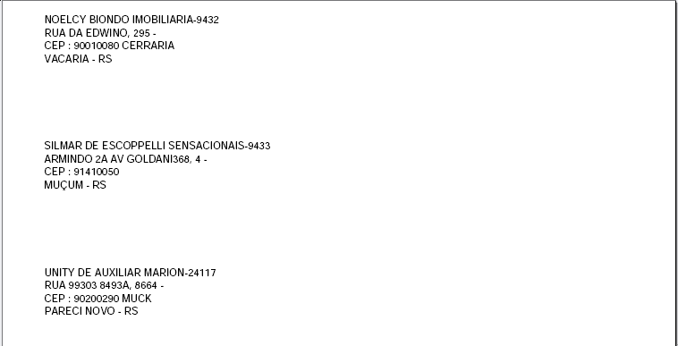
Figura
22
Nesse menu podemos emitir as notificações prévia ao contribuintes avisando que será feito uma contribuição e deve comparecer para uma audiência. Descrição dos campos e modelo do cadastro conforme Figura 23.
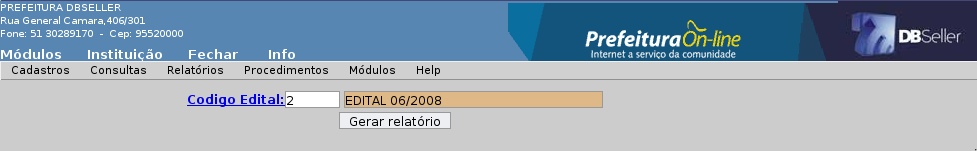
Figura
23
Na Figura 24 mostra um modelo de relatório de Notificação Prévia no DBPortal.
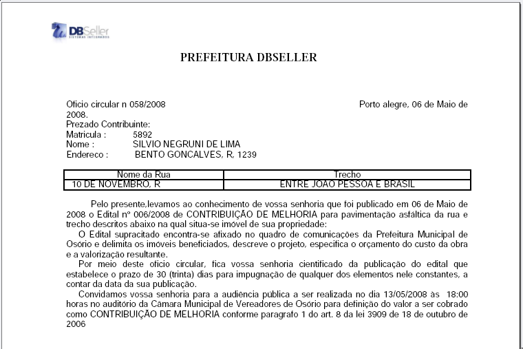
Figura
24
Nesse menu emite um relatório dos lotes para uma contribuição de melhoria. Descrição dos campos e modelo do cadastro conforme Figura 25.
Contribuição: Preencher o código da contribuição ou clicar no link para pesquisar.
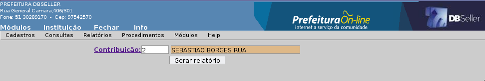
Figura
25
Na Figura 26 mostra um modelo de relatório de Contribuição do Lote no DBPortal.
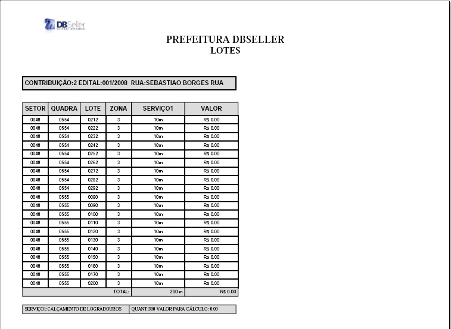
Figura
26
Nesse menu emite os relatórios financeiros do Módulo de contribuição de melhoria no sistema.
Nesse menu emite um relatório financeiro com os valores por Imóvel do edital selecionado. Descrição dos campos e modelo do cadastro conforme Figura 27.
Edital: Preencher o código do edital ou clicar no link para pesquisar.
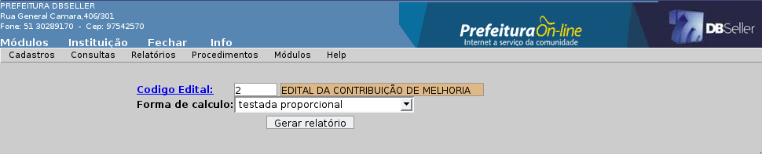
Figura
27
Testada: É automaticamente buscada da lista, sempre fracionado (quando for o caso);
Área: É a testada multiplicada pela metade da largura da rua (profundidade), que está no cabeçalho;
Área Corrigida: É a área dividida pelo total da coluna área multiplicado pela área total, que está no cabeçalho.
Valor Venal: Busca do cálculo do IPTU do ano.
Valor Final: É o campo Valor Venal mais o percentual de valorização, que está no cabeçalho;
Custo: Depende da seguinte regra: o teto é sempre a valorização, ou seja, o percentual de valorização em cima do valor venal. O custo se calcula da seguinte forma: [área corrigida] multiplicado pelo [valor do m2] (que está no cabeçalho) multiplicado campo [fator de resgate] (que também está no cabeçalho). Caso o custo calculado por essa regra citada seja maior que a valorização, é cobrado o percentual de valorização.
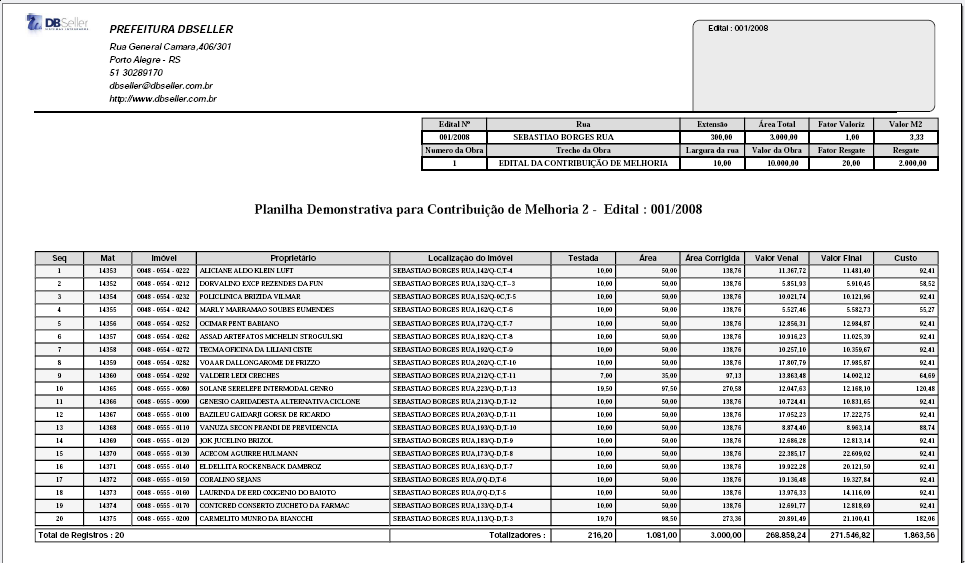
Figura
28
Nesse menu emite um relatório com os valores da Contribuição de Melhoria que foi pago e o devido com sua localização. Descrição dos campos e modelo do cadastro conforme Figura 29.
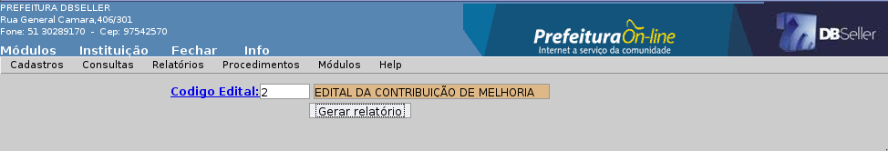
Figura
29
Na Figura 30 mostra um modelo de relatório de Contribuição do Lote no DBPortal.
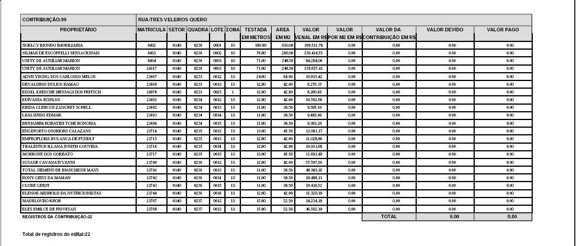
Figura
30
Nesse relatório emite um Lista financeira para os contribuintes que optaram por pagar para uma financeira ou empresa, e não na Prefeitura. Descrição dos campos e modelo do cadastro conforme Figura 31.
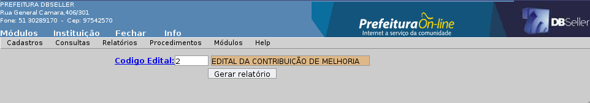
Figura
31
Na Figura 32 mostra um modelo de relatório de Contribuição do Lote no DBPortal.
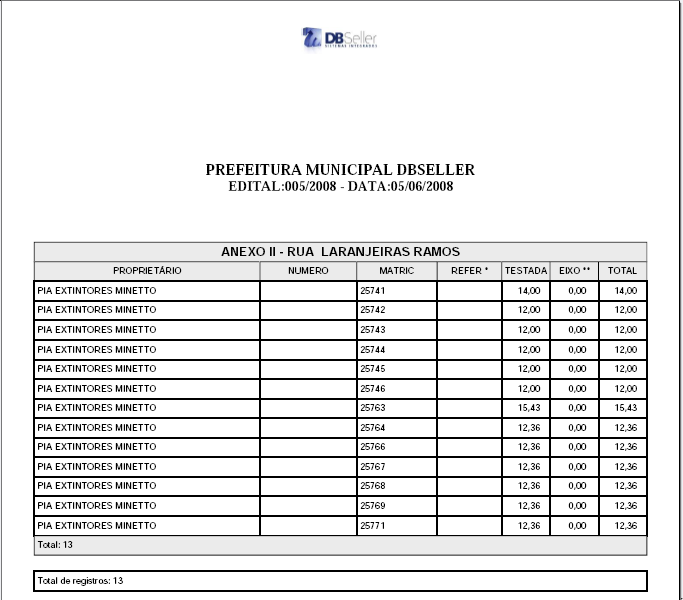
Figura
32
Nesse menu será feita a seleção e confirmação dos lotes e Matriculas de uma Contribuição de Melhoria, assim, o sistema efetua o lançamento nas respectivas tabelas.
Nesse procedimento é feita a confirmação dos lotes para a contribuição selecionada. Essa opção é mais utilizada quando precisarmos fazer o processo inverso, ou seja, depois de uma contribuição estar calculada e detectarmos que houve um erro no valor por exemplo, precisamos voltar na contribuição e nesse caso temos que excluir o cálculo, cancelar a seleção de matrículas e cancelar a seleção de Lote desmarcando os registros e clicando em Confirmar conforme a Figura 33.
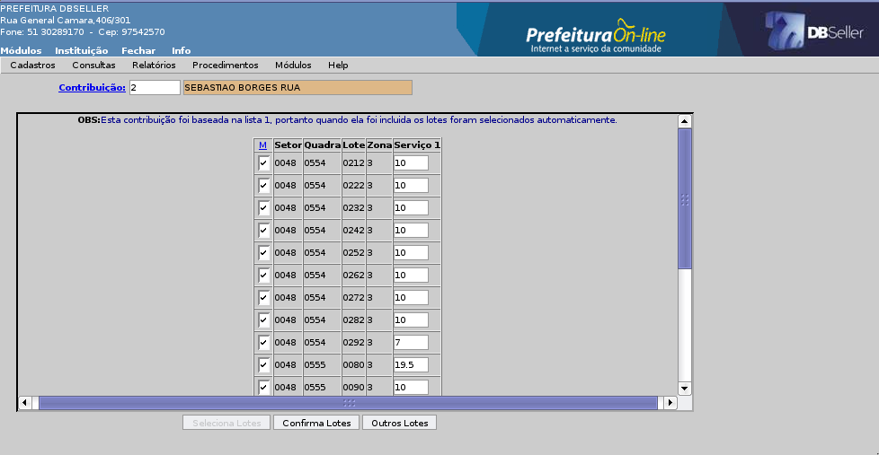
Figura
33
Nesse procedimento é feita a confirmação das matriculas referente a contribuição e mostrar as informações na tela após clicarmos no botão Seleciona Matriculas. Ao aparecer as matriculas da contribuição, devemos clicar no botão Confirma Matriculas.
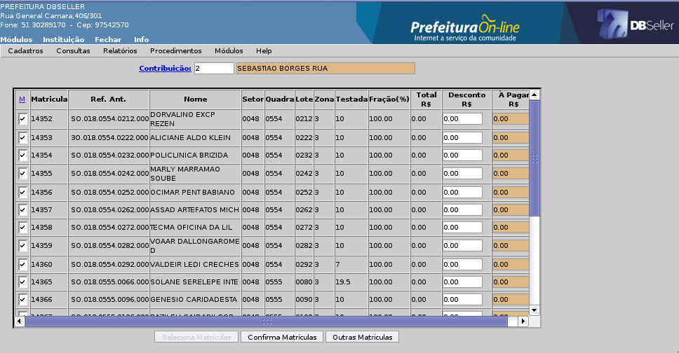
Figura
34
Nesse procedimento é autorizado a cobrança, alterando a opção para SIM e confirma, permitindo fazer o cálculo. Conforme a Figura 35.
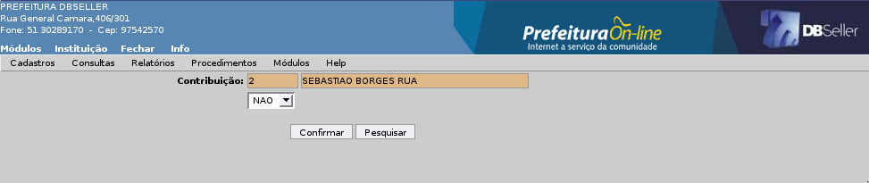
Figura
35
Nesse menu é feito os cálculos da Contribuição de Melhoria no sistema gerando os débitos na Consulta Geral Financeira.
Nesse procedimento e feito o cálculo geral das Contribuição de Melhoria. Descrição dos campos e modelo do cadastro conforme Figura 36.
Contribuição: Preencher a Contribuição para o cálculo ou clicar no link para pesquisa.
Parcelas: Preencher o número de parcelas que será calculada, busca dos parâmetros.
1º Vencimento: Preencher a data do primeiro vencimento, busca dos parâmetros.
Dia Vencimento: Preencher o dia do mês seguinte para o vencimento do débito.
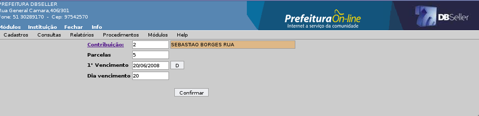
Figura
36
Nesse procedimento e feito o cálculo individual das Contribuição de Melhoria. Descrição dos campos e modelo do cadastro conforme Figura 37.
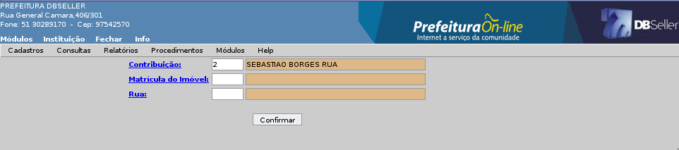
Figura
37
Na tela da Figura 38 mostra a seleção por Matricula permitindo calcular individualmente.
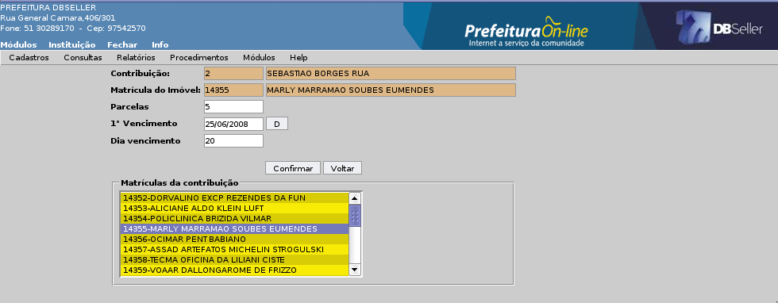
Figura
38
Nesse procedimento e feito a exclusão geral cálculo das Contribuição de Melhoria. Descrição dos campos e modelo conforme Figura 39.
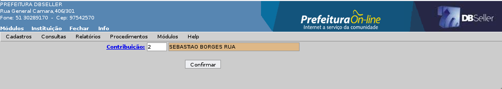
Figura
39
Nesse procedimento e feito a exclusão do cálculo individual das Contribuição de Melhoria. Descrição dos campos e modelo do cadastro conforme Figura 40.
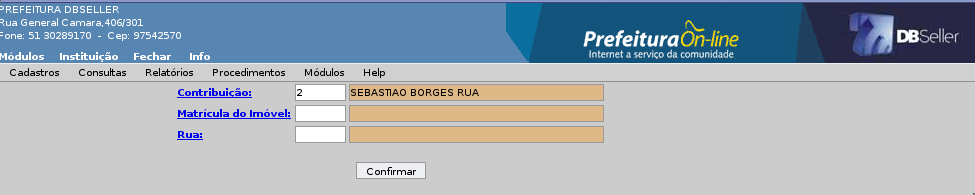
Figura
40
Na tela da Figura 41 mostra a seleção por Matricula permitindo excluir individualmente.
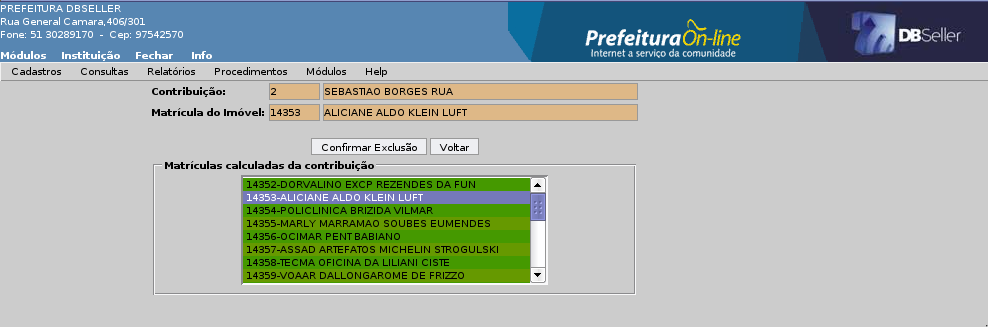
Figura
41
Nesse procedimento é feito a notificação dos débitos de uma Contribuição de Melhoria gerada pelo sistema. Descrição dos campos e modelo conforme Figura 42.
Contribuição: Preencher o código da contribuição ou clicar no link para pesquisar.
Tipo de Notificação: Busca preenchido de acordo com os parâmetros.
Seleção: Permite selecionar os débitos não notificados ou todos.
Matricula: Preencher as Matriculas que se quer notificar ou deixar sem seleção para notificar toda a contribuição.
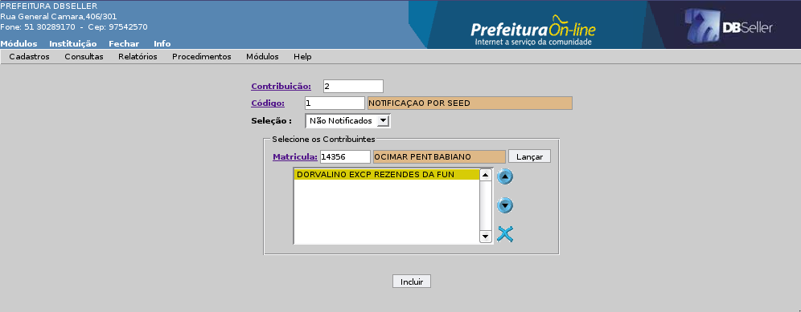
Figura
42
Nesse procedimento é cadastrado os parâmetros do módulo para a geração da contribuição de melhoria. Descrição dos campos e modelo do cadastro conforme Figura 43.
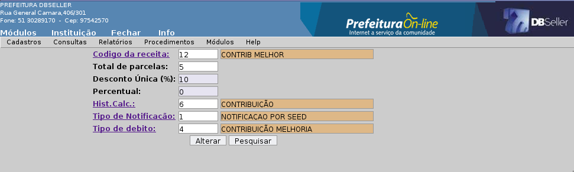
Figura
43
|
DBSeller Serviços de Informática Ltda. – www.dbseller.com.br Rua General Câmara, 406/301 – Porto Alegre – Fone: (51) 3028-9170 |
|